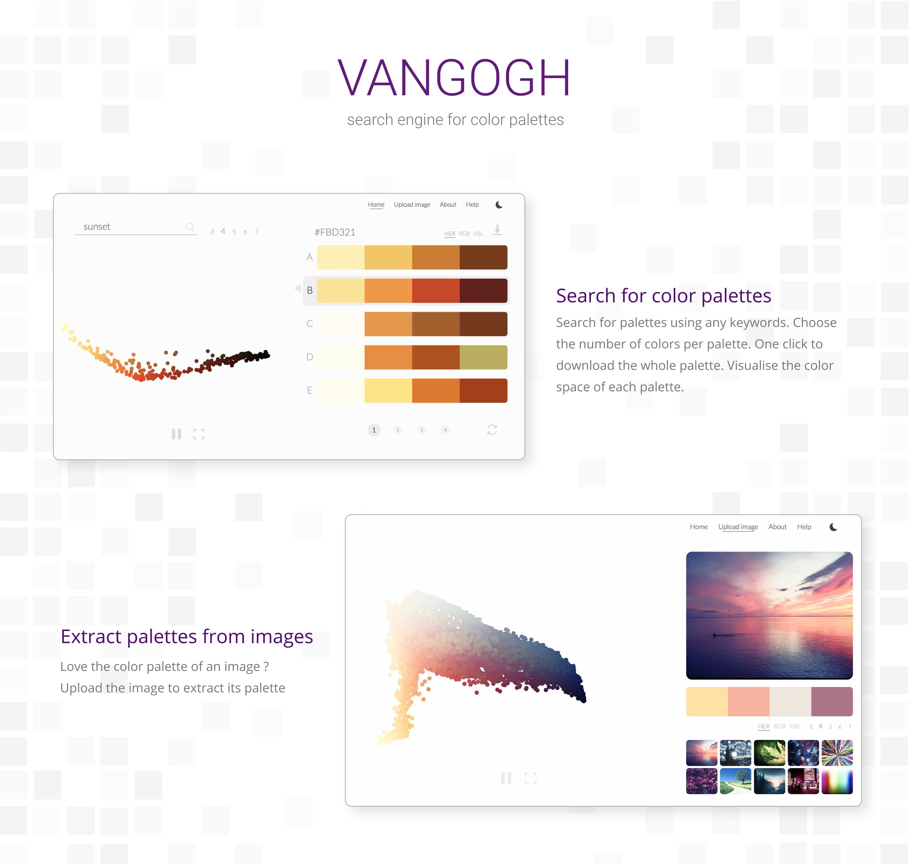
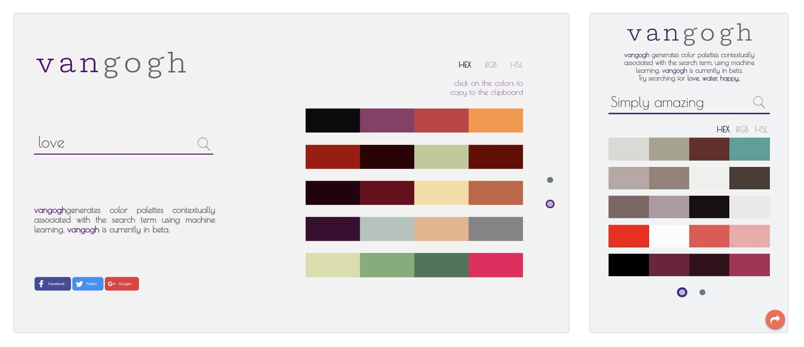
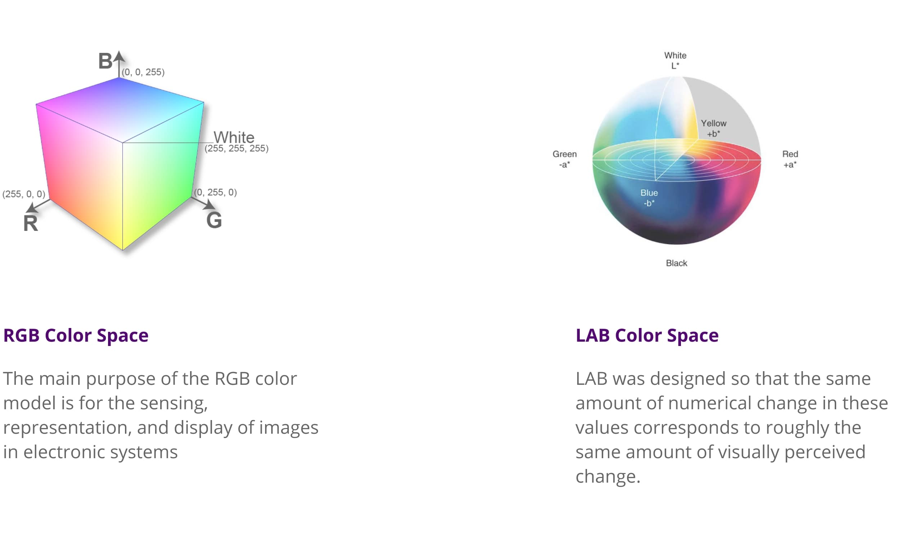
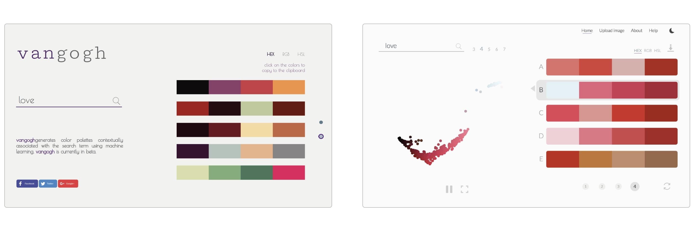
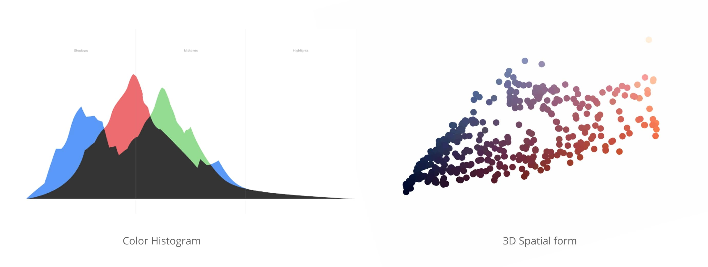
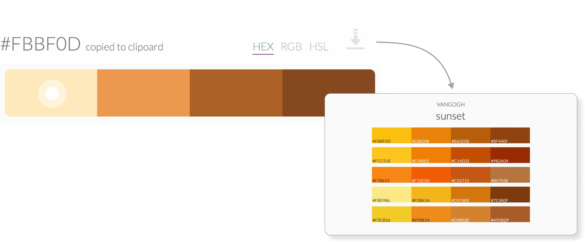
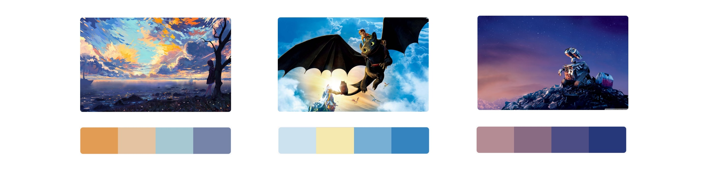
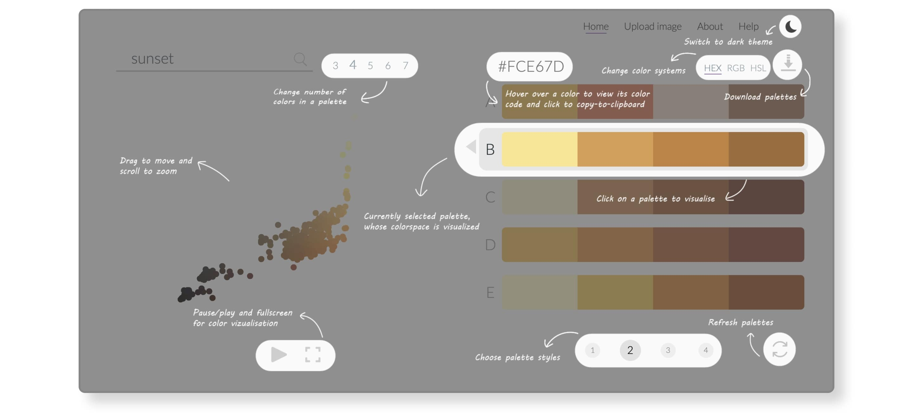
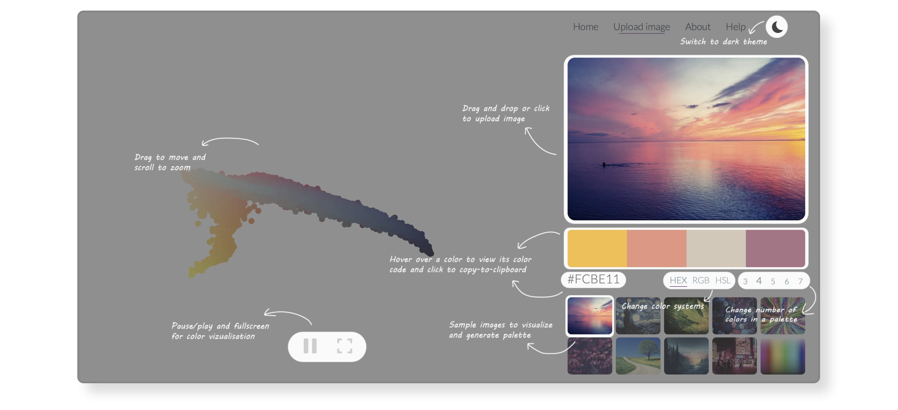
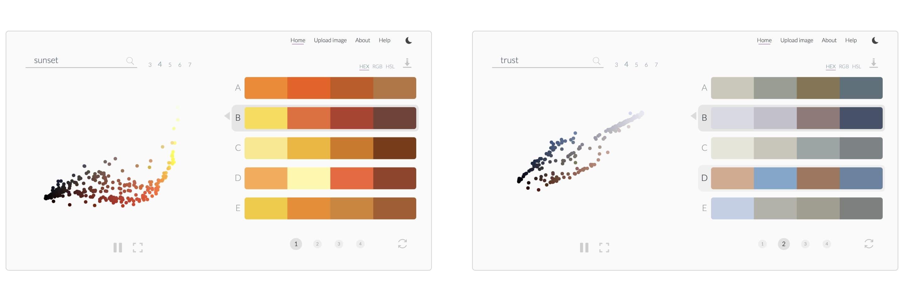

Vangogh
An AI powered color palette generator


Check out the live site at http://thevangogh.in
Ever wanted a color palette that evokes the feeling of ‘winter evening’, ‘cherry blossom’ or ‘ocean sunset’ ?
Google, but for color palettes
Color palettes are an important aspect of every design. Choosing a right palette is far from a trivial task. This seemingly simple task requires a good understanding of colors theory. More often, as designers we are faced with a situation where we need to choose a color palette that evokes a certain feeling. Be it illustrations, graphic design or palette for UI elements, creating a contextually appropriate color palette is an essential step in the process. How do we usually go about it ? Is there a way, we can automate the process ? These are the questions I had in mind that made me work on Vangogh.
Vangogh uses Machine Learning to generate color palettes based on keywords.

Overview of Vangogh
How do we make a machine create color palette based on a keyword ?
To answer that question, lets think of how we use a color palette. When designing something, we pick colors very carefully in a combination that would represent and evoke the feel of a certain idea. And we use those palettes
in art and designs we create. Be it photography or illustrations, their color palettes reflects the choice we made while choosing them.
The art, photographs and graphics we make, reflect the color palette we chose that would evoke the desired feeling
Prototype : Proof of concept
The idea was to extract palettes from these works we have created, as they reflect how we feel about certain color combinations. For example, when we want a color palette to evoke ‘sunset’ , we could extract color palettes from images of sunsets, as we can assume a good photograph generally has a good color palette. So I broke it down into a set of simple (actually, not simple) process
- Get lots of images for a keyword
- Extract color palette from each image
- Hope the palettes are contextually appropriate
The best source for images that we can search with a keyword — Google Images. But Google Images API contains a lot of duplicates that gives the same palettes. So I decided to go with Bing Image search API. I used a Machine Learning algorithm called K Means clustering to extract the color palettes from each image. I its sent to the front-end to be displayed as palettes.

Screenshots of Vangogh V1.0
Clearly, this wasn’t working. A bunch of problems
- Colors were pretty random. Reason ? Not all images returned from the search are very representative of the idea we are trying to capture
- Most of the time, background like soil and sky dominates the palette
- Would this tool be useful on a mobile ?
After a round of suggestions and feedbacks, I set out to make version 2.0
Vangogh 2.0 : Project to Tool
I made a series of quick improvements that clearly resulted in visible increase in accuracy and a better user experience. The backend is built in python and uses
scikit-learn library for Machine Learning. The front end is built using
JQuery and
Plotly.js. Here’s the rough flow of how the system works, without getting into the technicalities.
Working of Vangogh
One of the most important change was the color space I chose. RGB is very convenient when it comes to displays. But it doesn’t reflect the way humans perceive colors. Importantly, the difference between numerical representations doesn’t reflect the perceived difference. This is a problem when we do averaging go colors. Hence I went with LAB which was created by Adobe that is closer to how humans perceive.

RGB and LAB colorspace
Due to the colourspace and better calibrated K-Means clustering, the accuracy was greatly improved. The initial clustering of the image was able to remove the outliers. Final trimming of the palettes using color theory, helped in producing accurate and usable palettes.

Vangpgh 1.0 vs Vangogh 2.0
Color distribution is something that had always been hard to visualise. Although we have histograms, it does’t give an intuitive sense of the color profile of images or palettes. Hence, I created a 3D visualisation of the colors in the image, that paints a better picture of the chromatic composition. Here, the RGB values of colors are used to plot a color as a point in 3D space. The idea is to give a glimpse of how the the distribution remains similar for similar themes.

Visualising Color profile
I wanted it to be easier to pick the colors from Vangogh to be used in different applications. Here, one can copy the color code by clicking on a color and can choose from three different color spaces. The whole palette can be downloaded as an image, which can be used to color pick in various graphic design applications.

Color picking features
Some palettes primarily have lighter colors. Some have dark colors. To handle this, I added a dark theme, which helps in reducing the interference from the background.

Dark and Light themes
One of the most requested feature during the run of the prototype was the ability to extract the palette from a single image. It made sense as many a times, we take inspirations from images and illustrations. Since Vangogh uses the same mechanism underneath to generate palettes, it was just a matter of creating a separate interface.

Palettes generated using Vangogh Image
As Vangogh was designed to be a tool, it was necessary to include a simple description of all the features it has. I created an overlay that describes the different features. The overlay is shown the first time a user visits the site. On subsequent visits, the overlay is shows only under the ‘Help’ section. This is achieved using a non-tracking cookie.

Overlay on Vangogh Search

Overlay on Vangogh Image
Whats next : Roadmap
Although, the system currently gives usable palettes, its no where closer to suggest palettes with human accuracy. For term that are really abstract like ‘trust’, the system fails to give a good palette. This is because we don’t have a solid color representation for such terms, and Vangogh in a way is a direct reflection of how we use palettes in artworks we create.

Accuracy on different terms
As I learn more advanced methods of AI and color theory, I plan to improve Vangogh continuously in various aspects.
- Have the ability to distinguish between background effects and subject to have a better representative image
- Compare the search terms and palettes generated for contextual appropriateness
- Have the ability to get user rating for color palettes to learn over time what makes a good color palette
- Let the user tweak the palettes in-app and learn from the tweaks
Contribute
The project is open source. Please feel free to add/request features. I'd love to hear feedbacks and suggestions. Check out the code at
https://github.com/pbshgthm/vangogh.
Check out the live site at http://thevangogh.in